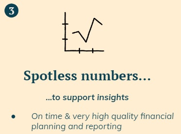
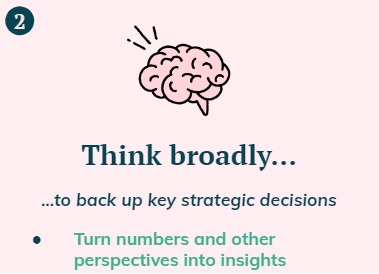

Summary
This note goes through how Finance adds value to a startup and how a finance team should be structured from a very early stage at seed level, across all stages of development (series A, B, C), up until becoming a mature company.
Finance Feedback Loop
The purpose of a startup is to embark on a journey through time
to achieve a vision. On every step along the way, there will be
bumps that may shift the direction the company is heading to and
jeopardise its goals.
I have come to realise that Finance’s key purpose is to partner with
people to ensure, in a helpful way, that the vision is executed (which is why I love my job).
This is achieved by providing feedback on a company’s current trajectory. Actions can then be
discussed across a multi-disciplinary team, to adjust its direction.
By repeating this process many times, a feedback loop is created,
to ensure either that the company stays on track or if a destination change is
required (e.g. pivot the business so that it is sustainable ahead of scaling).
In a nutshell, it is like driving a car. We need not only to turn the steering wheel whenever there is a curve to ensure we stay on the road, but also to choose where we are heading to.
Finance Pillar #3: Spotless numbers
The next step question then becomes, how can finance provide feedback? We need numbers for the past (financial reporting) to assess the trajectory and for the future (financial planning and analysis or “FP&A”) to see where we are likely heading to.
 Figure 2: Spotless numbers.Finance Pillar #2: Think
Obviously, if the key goal is to partner with people and provide feedback, then the next pillar is to have enough time to think about what the numbers are saying and provide insights. This should be done not just from a finance perspective, but taking into account the other team’s perspective.
 Figure 3: Think broadly.Finance Pillar #2: Think
Obviously, if the key goal is to partner with people and provide feedback, then the next pillar is to have enough time to think about what the numbers are saying and provide insights. This should be done not just from a finance perspective, but taking into account the other team’s perspective.
 Figure 3: Think broadly.
Figure 3: Think broadly.
If I can be helpful on anything, or if you have any comments or suggestions,
please do reach out: